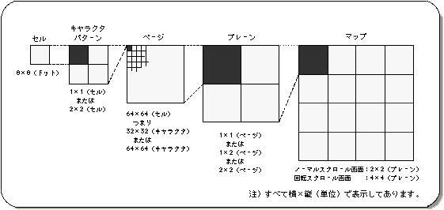

★SGL User's Manual
★PROGRAMMER'S TUTORIAL
★SGL User's Manual
★PROGRAMMER'S TUTORIAL
▲戻る｜進む▼
8-2.スクロールの構成単位
- スクロールは、モニターに映し出される微細な点（ドット）の集まりです。この点を効率よく扱うために、ＳＧＬでは下図のようなスクロール単位系を採用しています。
- ８×８ドットの点の集合をセルと呼び、スクロールを扱う際はこのセルを最小単位として話を進めていきます。このセルが更に集まってキャラクタパターンとなり、
これが更に集まってページ、ページが集まってプレーン、プレーンが集まってマップとなります。
＜図8-3 スクロール画面構成単位＞

- 注）
- すべて横×縦（単位）で表示してあります。
スクロール構成単位について
- セガサターンのハードウェアには、スクロールをセル単位ではなくドット単位（ビットマップと呼ぶ）で扱う機能も含まれていますが、本マニュアルでは解説しません。
しかしながら、ビットマップを含む幾つかのスクロール機能をサポートする関数は、ＳＧＬライブラリに含まれており、また、それら関数群は“リファレンスマニュアルの関数リファレンス”で簡単ではありますが解説を加えてあります。
ビットマップモードを含む幾つかの機能に関しては、“HARDWARE MANUAL vol.2”及び“リファレンスマニュアルの関数リファレンス”を参照するようにしてください。
▲戻る｜進む▼
★SGL User's Manual
★PROGRAMMER'S TUTORIAL
Copyright SEGA ENTERPRISES, LTD., 1997